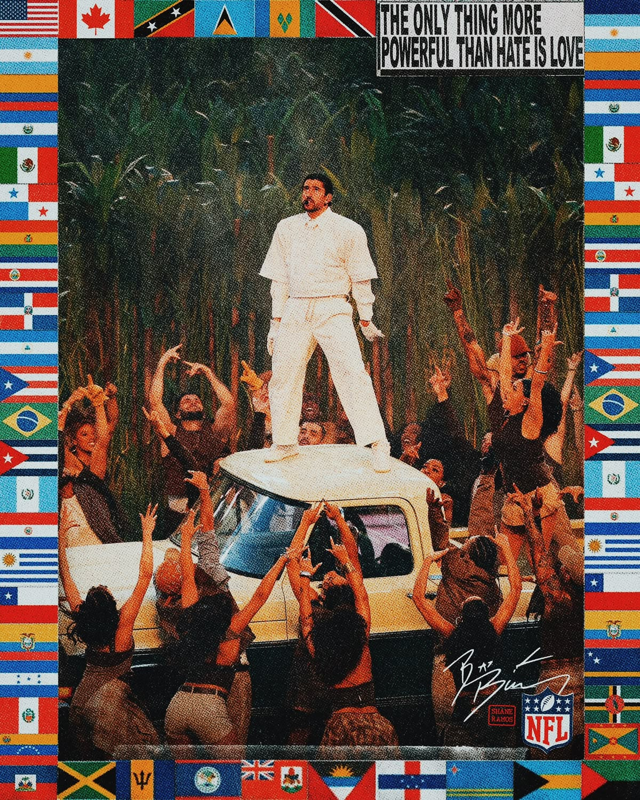
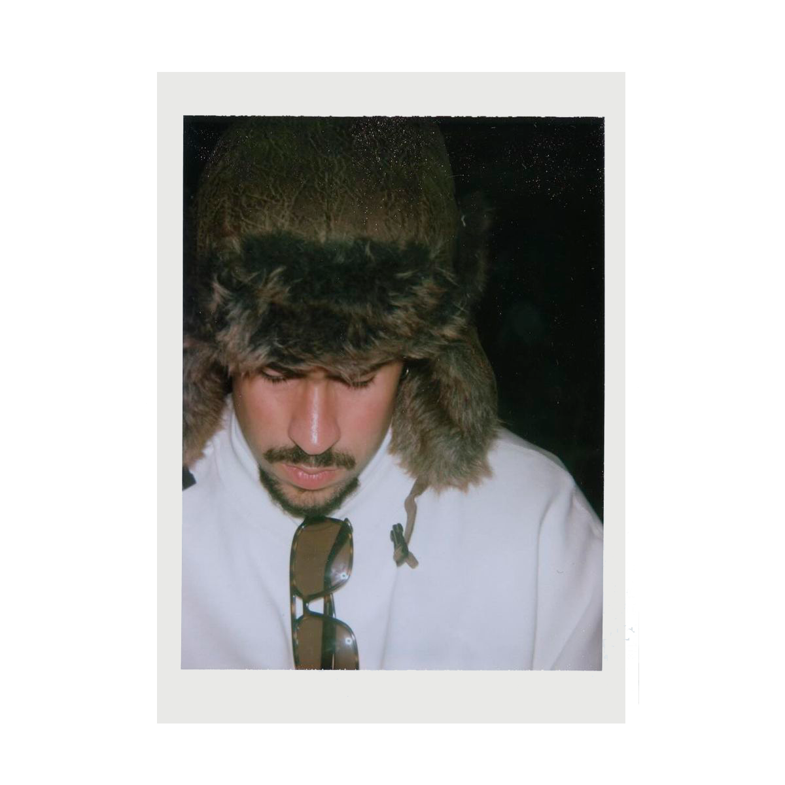
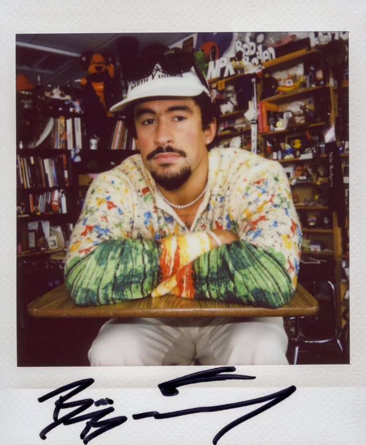
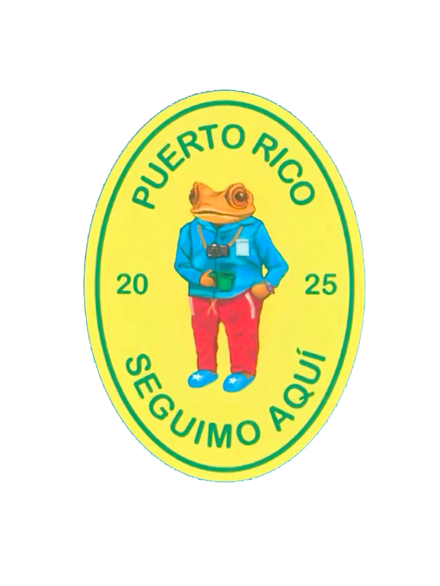
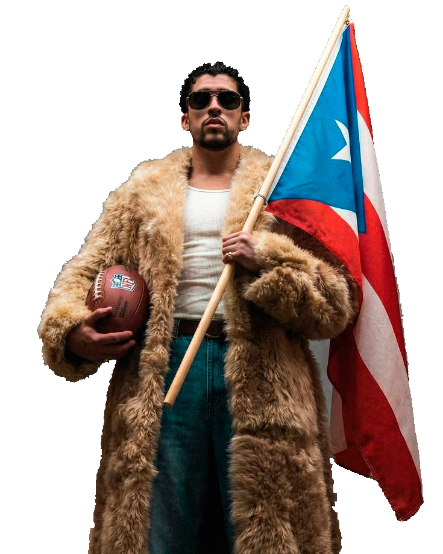

AÑOS 2020



¡ QUE RICO ES SER LATINO! y mas cuando el artista mas escuchado de la decada es Benito Martinez Ocasio un cantante que ama ser latino y lo que esto nos distingue.Porque Benito convirtió los 2020s en una era donde el español dejó de tener límites en la industria musical. En 2020 lanzó YHLQMDLG, un álbum que hizo historia al convertirse en uno de los discos en español más exitosos del momento. Luego, ese mismo año, llegó El Último Tour del Mundo, convirtiéndose en el primer álbum completamente en español en alcanzar el número 1 del BILLBOARD 200. Pero si hablamos de BAD BUNNY, debemos hablar de 2022, cuando Un Verano Sin Ti se convirtió en un FENOMENO GLOBAL, dominando charts y conquistando al mundo entero. Y cuando parecía que Benito ya lo había logrado todo, llegó 2025 con DeBÍ TiRAR MáS FOToS, unA CARTA DE AMOR a su tierra natal Puerto Rico que lo llevó nuevamente a la cima del streaming mundial. Pero la historia no terminó ahí: en 2026 hizo historia en los GRAMMYS al convertirse en el primer artista en ganar ÁLBUM DEL AÑO con un disco completamente en español, y llevó toda la cultura latina al escenario del SUPER BOWL LX con un HALFTIME SHOW. Donde demostró que....


haz click para ver el HALFTIME SHOW 2026